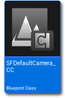
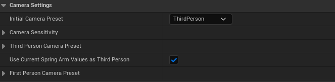
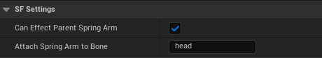

摄像机控制器
SF 使用一套更通用的摄像机系统：在玩家角色蓝图中，把摄像机组件挂到弹簧臂组件上，这是很常见的做法。SF 有意没有采用完全自定义的摄像机系统，这样大多数开发者都能修改 SF 的玩家摄像机。你应该已经熟悉这种常见设置，因为很多示例/Unreal 项目都使用同样的结构。唯一区别是：SF 使用了一个自定义摄像机组件类，它的行为与普通摄像机组件完全一致。
这样，我们就可以通过这个摄像机组件执行自定义摄像机逻辑。这个自定义摄像机组件与 SFCameraManager_AC Actor 组件配合使用，方便引用和修改自定义摄像机组件中的值。

SF 的摄像机系统开箱即支持第一人称与第三人称。二者可以在运行时切换，但通常你会希望为游戏选择并固定一种视角。在玩家控制器蓝图中选中 SFCameraManager_AC Actor 组件后，可以在这里修改视角数值。

— 初始摄像机预设(Initial Camera Preset) 枚举(Enum)
选择玩家开始时使用的预设。
— 摄像机灵敏度(Camera Sensitivity) 浮点(Float)
在这里分别设置鼠标与手柄/控制器的灵敏度。
— 第三人称摄像机预设(Third Person Camera Preset) 结构体(Structure)
为第三人称定义 视野(Field of View)、距离(Distance，弹簧臂)、偏移(Offset，弹簧臂)、移动平滑(Movement Smoothing) 与 旋转平滑(Rotation Smoothing)。
— 使用当前弹簧臂值作为第三人称(Use Current Spring Arm Values as Third Person) 布尔(Bool)
设为“true”会覆盖 第三人称摄像机预设(Third Person Camera Preset) 结构体中的值，改用角色蓝图中“弹簧臂（Spring Arm）”组件上已设置的值。
— 第一人称摄像机预设(First Person Camera Preset) 结构体(Structure)
为第一人称定义 视野(Field of View)、距离(Distance，弹簧臂)、偏移(Offset，弹簧臂)、移动平滑(Movement Smoothing) 与 旋转平滑(Rotation Smoothing)。
然后，在玩家角色蓝图中选中 SFDefaultCamera_CC 摄像机组件，可以定义以下设置。

— 可影响父级弹簧臂(Can Effect Parent Spring Arm) 布尔(Bool)
如果你的摄像机挂在“弹簧臂（Spring Arm）”组件上，开启后允许 SF 摄像机组件在第三人称的某些摄像机操作中修改弹簧臂。
— 将弹簧臂挂接到骨骼(Attach Spring Arm to Bone) 名称(Name)
如果 可影响父级弹簧臂(Can Effect Parent Spring Arm) 设为“true”，这个选项允许你把“弹簧臂（Spring Arm）”组件挂接到玩家角色网格体的某个骨骼上。
原文这里把“Spring Arm”误写成了“Sprint Arm”，中文按正确的“弹簧臂（Spring Arm）”翻译。